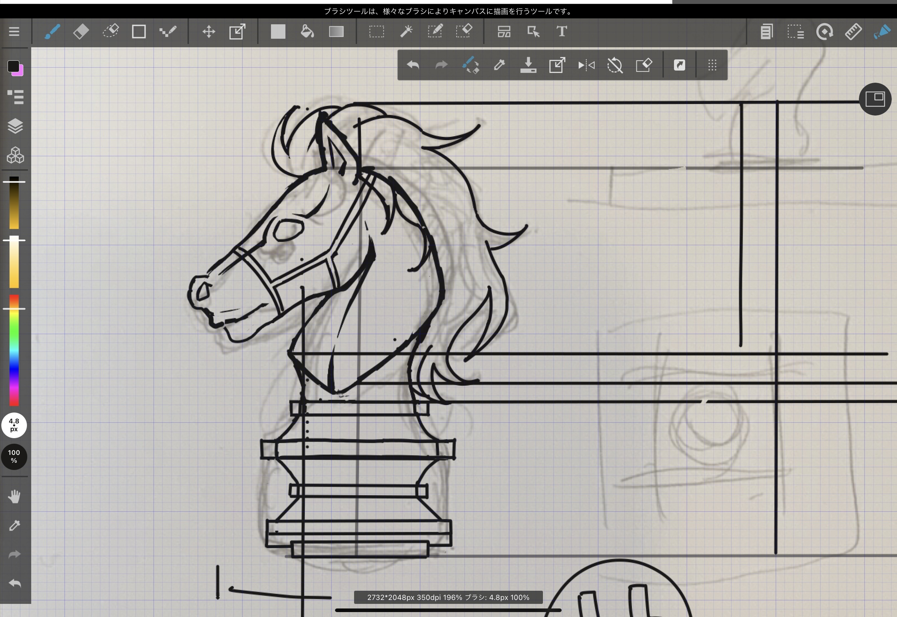
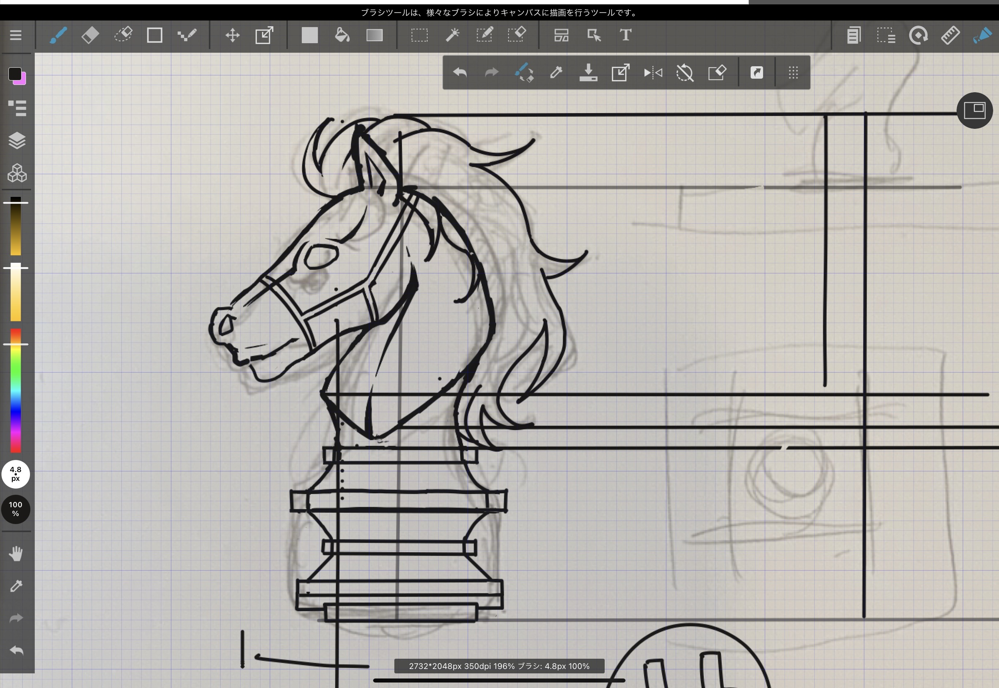
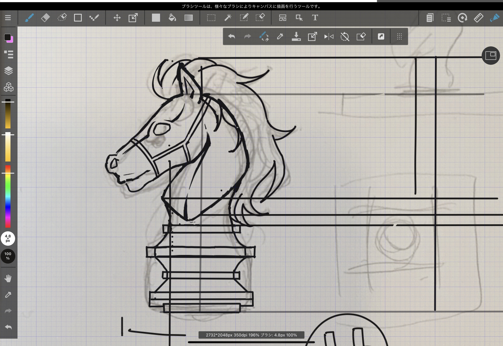

テーマ
デザイン性も追求しつつ、実際の生活に役立つものを作りたいと考えた。
そこで印鑑の定位置が決まっておらずよく所在不明になってしまう問題から、デザイン性のある印鑑の作成を行った。
デザイン
主に荷物受け取りの際や、回覧板でのサインなど玄関先で使用する予定であるため
玄関の白とダークブラウンから浮かないよう着色せず透明なままにした。
印鑑自体のデザインをチェスの騎士にしたのは、私が中世っぽいクラシカルなデザインが好きだったためであり、その中でも家を「護ってくれる」という意味も込め 騎士をデザインした。
 

印鑑自体のデザインをチェスの騎士にしたのは、私が中世っぽいクラシカルなデザインが好きだったためであり、その中でも家を「護ってくれる」という意味も込め 騎士をデザインした。
デザイン下書き
下書きに使用したアプリ：メディバンペイント

製作
馬のデザイン部分はイラストレーターで製作し、土台部分は組み合わせるために正確な数値設定が重要であったため、Fusion360で作成したのち合体させた。使用するアクリルパネルの厚さに合わせて印刷データ作成。 馬の部分は土台に合わせて立体感を出すために、重ねて接着するためのシルエットや耳などのデータも作成。
馬部分の接着は透明レジン液でおこなった。
完成